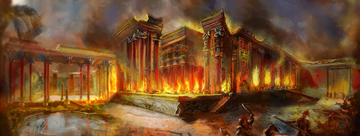

In 330 BCE, Alexander the Great and his army burnt down Persepolis, with special attention to the destruction of the Palace of Xerxes. Persepolis was the most prosperous city at the time, so it had to be receive the most severe destruction as a symbol of Alexander's conquest and revenge for the ruin of Athens.
